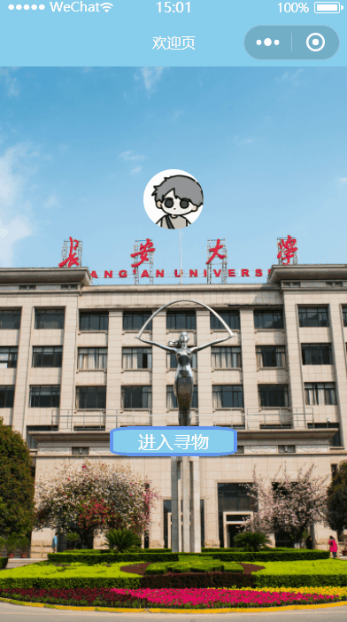
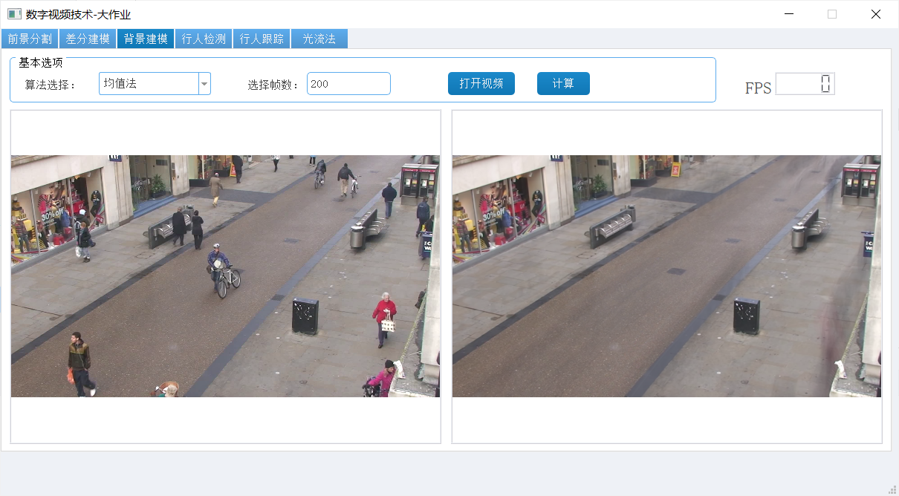

开源项目更新中... （building）
Github上的开源项目
- 基于PyTorch的超过20种CNN经典网络复现仓库（带详细注释）
- 基于Python的算法合集整理，包含30余种不同类型算法题的整理
- 基于PyTorch的YOLO-F复现仓库
- 基于PaddlePaddlle的BayesianCNN复现仓库
- 基于PaddlePaddlle的HED网络复现仓库
- 基于元胞自动机模拟病毒传染（SEIR模型）可视化
商品检测识别系统

-
2019.07 -2020.05 项目负责人
本项目旨在在充分利用现有的技术的基础上，来设计针对适合特殊人群的商品信息识别系统并将其应用到特定的电子设备中供所需人群使用。采用YOLOv2、YOLOv3、SSD、Faster
R-CNN对商品进行检测，实现了10种简单类别商品的检测。提出改进的Faster R-CNN方法对商品目标检测，在Faster R-CNN基础上，提升了3.78%的检测精确度，算法搭载在PyQT5进行交互和显示。
- 成果或收获: 大学生创新创业省级项目，成功结题
溺水检测预警小程序

-
2020.06 - 2021.10 项目负责人
本项目提供了一种基于计算机视觉的溺水行为在线识别小程序。该系统可利用现有监控系统或安装在水上的相机，结合云服务器计算，通过卷积神经网络分类器来判断是否发生了溺水行为，从而发出警报以便救援人员及时感知所发生的溺水事件，及时拯救生命。
- 成果或收获: 阿里云创新应用赛创新奖 软件著作权1篇
CHD寻物小程序

-
2020.07 - 2020.10 负责部分UI设计、逻辑实现，文档撰写
“长大寻物”小程序是一款新型的校园服务小程序，此款小程序的实现，有利于拾主快速发布和提交信息，有利于失主高效安全得到失物，有利于校园和谐风气的传播，有利于校园互联网+的发展和进步，有利于市场的调度和稳定发展。“长大寻物”将于长安大学学生会自律与管理委员会合作，将拾得物品提交到校园对应的十多个安置点，并由委员会委员保管和管理，由技术人员进行后端维护，这样也进一步加强了学校对于相关物品的管理和收纳工作。
- 成果或收获: 微信小程序应用开发赛西北赛区二等奖
文档图像分割

-
2020.9 - 2021.9 我的第一个科研项目
针对传统边缘检测算法无法处理带有复杂背景下的纸张边缘分割的问题，提出基于RCF网络深度学习边缘分割方法。该方法是首次通过深度学习的方法来解决纸张边缘分割的问题。实验证明，该算法能获得较高的边缘分割精度。
- 成果或收获: 已发表两篇相关论文
森林火灾检测预警系统

-
2020.10 - 2021.03 竞赛
整体的产品由一个隔热外包装盒组成，在盒子内部，树莓派4B装载由带有核心火焰检测算法的处理器芯片，外部传感设备由外置摄像头、GPS传感器和温湿度传感器，以及其他的传感器设备等。其中，外置摄像头将捕捉图像画面并传输到处理器中进行处理；GPS传感器将传输GPS位置信息；温湿度传感器将获取外界的温湿度
- 成果或收获: 长安大学第十二届挑战杯课赛二等奖，SCI一篇待审，软著一篇
智能阅读交互系统

-
2021.05 - 2021.12 科研&竞赛&个人项目
项目的目标是设计一款集人机交互、图像处理、语音处理、自然语言处理等技术于一体的智能交互阅读产品，帮助老年群体克服阅读的障碍，丰富老年人的精神文化生活功能齐全，只要是客观存在的图文内容，都可以进行轻松识别；针对性强，老年群体轻松、智能、享受阅读这一主题，解决了老年群体迫切需要享受精神层面的生活但由于各类因素而带来的难以正常阅读读物的问题。智能性高，以AI技术为基础，分交互、识别、语音三大智能模块，掌握核心科技，全方位多层次解决老年群体的阅读障碍问题。
- 成果或收获: 校互联网+银奖，校挑战杯创赛二等奖
“数字视频处理”教学演示系统

-
2021.03 - 2021.07 课程设计&个人项目
数字视频处理技术内容繁杂、算法众多，教学实践中发现学生很难快速理解和掌握相关算法的原理，为了帮助初学者对视频处理中的常用算法快速建立起感性认知，更好地开展教学，本项目搭建了一个“数字视频处理”算法教学演示系统，系统利用Python语言开发，通过基于OpenCV实现视频处理常用算法的功能，采用PyQt5搭建用户界面，实现了前景分割、差分建模、背景建模、行人检测、行人跟踪和光流法等图像处理算法，具有良好的实用性和交互性，能够帮助高校教师轻松可视化教学，帮助学生轻松掌握算法知识。
- 成果或收获: 优秀课程设计，数字视频技术Score 95
智能阅读交互系统v2
-
2022.03 - 至今 竞赛&个人项目
- 项目进行ing： 第十九届中国研究生电子设计竞赛